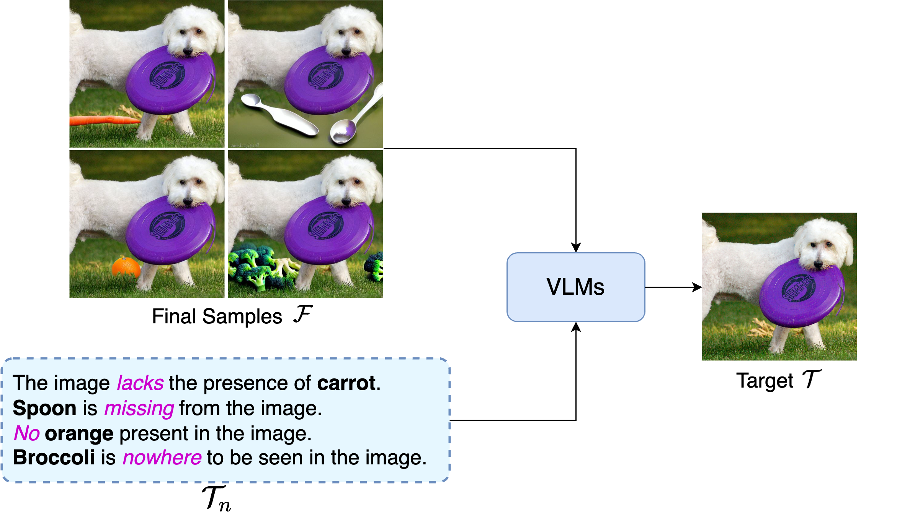
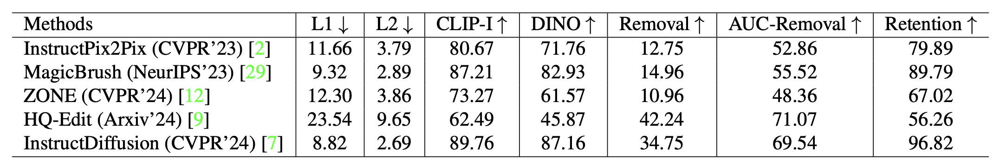

Abstract
Negation is a fundamental linguistic concept used by humans to convey information that they do not desire. Despite this, there has been minimal research specifically focused on negation within vision-language tasks. This lack of research means that vision-language models (VLMs) may struggle to understand negation, implying that they struggle to provide accurate results. One barrier to achieving human-level intelligence is the lack of a standard collection by which research into negation can be evaluated. This paper presents the first large-scale dataset, Negative Instruction (NeIn), for studying negation within the vision-language domain. Our dataset comprises 530,694 quadruples, i.e., source image, original caption, negative sentence, and target image in total, including 495,694 queries for training and 35,000 queries for benchmarking across multiple vision-language tasks. Specifically, we automatically generate NeIn based on a large, existing vision-language dataset, MS-COCO, via two steps: generation and filtering. During the generation phase, we leverage two VLMs, BLIP and MagicBrush, to generate the target image and a negative clause that expresses the content of the source image. In the subsequent filtering phase, we apply BLIP to remove erroneous samples. Additionally, we introduce an evaluation protocol for negation understanding of image editing models. Extensive experiments using our dataset across multiple VLMs for instruction-based image editing tasks demonstrate that even recent state-of-the-art VLMs struggle to understand negative queries.
NeIn Dataset
The creation of NeIn involves two primary stages: the first stage is generating, which employs BLIP and InstructPix2Pix to generate target samples; the second stage is filtering, where BLIP is utilized to remove erroneous samples.

The main idea is that given image \(\mathcal{I}\) and a corresponding caption \(\mathcal{T}_{o}\) describing what objects are present in \(\mathcal{I}\), we will find a negative clause, termed \(\mathcal{T}_{n}\), such that it satisfies the content of source image \(\mathcal{I}\). Next, our goal is to create an image \(\mathcal{G}\) that \(\mathcal{T}_{o}\) matches it but not \(\mathcal{T}_{n}\), which means the object specified in \(\mathcal{T}_{n}\) is present in \(\mathcal{G}\). We eliminate generated samples \(\mathcal{G}\) which significantly alter the content of query image \(\mathcal{I}\) or make it difficult to identify object categories \(\mathcal{S}\) to produce the final samples \(\mathcal{F}\). Thus, in the context of image editing, given image \(\mathcal{F}\), \(\mathcal{T}_{n}\) will be a query for removing some object in \(\mathcal{F}\), taking \(\mathcal{I}\) as one of the best results.

Evaluation Protocol
We consider whether image editing methods successfully eliminate the object categories specified in the negative sentence, and determine if these methods can preserve the objects not mentioned in the negative sentence. The first is determined by the removal score, while the latter is assessed using the retention score. We leverage OWLv2 for object identification during evaluation.
Input:
\(\mathcal{T}\): considered model's outputs
\(\mathcal{S}\): objects need to be removed
Output:
\(s\): removal score
Procedure:
\(s := 0\)
For each tuple \((\mathcal{T}^{(i)}, \mathcal{S}^{(i)})\) in \((\mathcal{T}, \mathcal{S})\)
\(p \gets \text{OWLv2}(\mathcal{T}^{(i)}, \mathcal{S}^{(i)})\)
# predictions of OWLv2 finding object \(\mathcal{S}^{(i)}\) in \(\mathcal{T}^{(i)}\)
If the length of \(p\) is equal to 0
\(s \gets s + 1\)
End If
End For
\(s \gets s / |\mathcal{T}|\)
Return \(s\)
Input:
\(\mathcal{F}\): samples of NeIn
\(\mathcal{T}_o\): original caption from MS-COCO
\(\mathcal{T}\): considered model's outputs
Output:
\(s\): retention score
Procedure:
\(s := 0\)
For each tuple \((\mathcal{F}^{(i)}, \mathcal{T}_o^{(i)}, \mathcal{T}^{(i)})\) in \((\mathcal{F}, \mathcal{T}_o, \mathcal{T})\)
\(list^1 := []\), \(list^2 := []\)
\(\mathcal{O} \gets \text{objects mentioned in} (\mathcal{T}_o^{(i)})\)
# \(\mathcal{O}\): original objects in source image \(\mathcal{I}\)
\(p^1 \gets \text{OWLv2}(\mathcal{F}^{(i)}, \mathcal{O})\)
# predictions of OWLv2 finding objects \(\mathcal{O}\) in \(\mathcal{F}^{(i)}\)
For each \(object\) in \(p^1\)
append unique \(object\) to \(list^1\)
# each object in \(p^1\) may overlap with multiple confidence scores; append each object only once
End For
\(p^2 \gets \text{OWLv2}(\mathcal{T}^{(i)}, list^1)\)
For each \(object\) in \(p^2\)
append unique \(object\) to \(list^2\)
End For
\(score = \text{length of } list^2 / \text{length of } list^1\)
\(s \gets s + score\)
End For
\(s \gets s / |\mathcal{T}|\)
Return \(s\)
Results for Image Editing

Image editing models generally struggle to understand the meaning of negation when they do not remove the mentioned objects, as demonstrated by the low Removal and AUC-Removal scores. It also distort the content of the source image, as can be seen by the low Retention score.

Instead of removing the mentioned objects, image editing models tend to have the following problems: (1) retaining the mentioned object in the edited image; (2) increasing the quantity of mentioned object in the generated image, and even bringing that object to the center of the images; and (3) completely replacing the content of the query image with that object. This observation demonstrates the failure of VLMs in image editing task on negation understanding, potentially affecting other vision-language tasks.